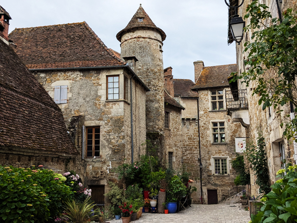
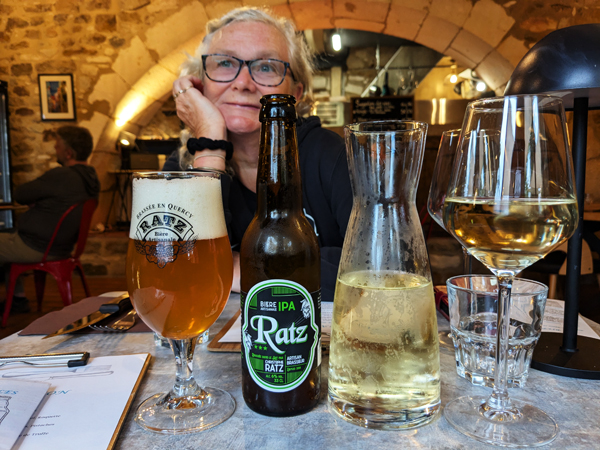
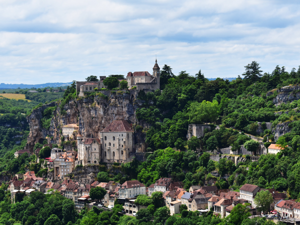
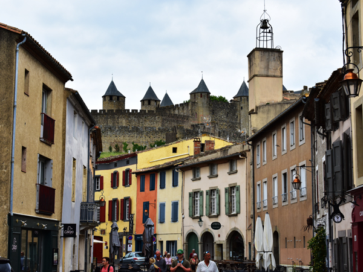
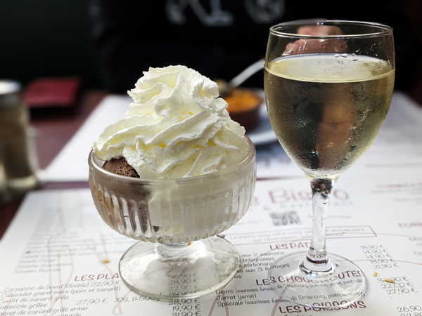
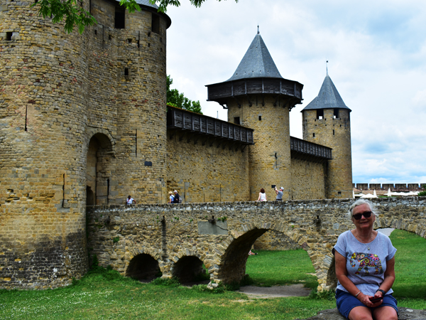

Sunday 1st June We left Kingsclere at 5:45 and had a drive of about an hour to get to the ferry port in Portsmouth. We were on the ferry by about 7:45 and found somewhere to sit for the six hour crossing to Caen. The ferry was not too full so we were able to have quite a large area to ourselves which was all reasonably comfortable. We left Portsmouth about 25 minutes late at 8:25.
The six hour journey went remarkably quickly. We had breakfast after boarding, I managed to get about an hours sleep. We had more food at 1ish (UK time) and arrived in Caen on time at exactly 3pm (French time). It took about 20 minutes to get off the ferry and another 30 minutes or so to get through immigration but by 3:45, we were on our way out of the port.
We had chosen to stay in Alençon tonight. This was not for any particular reason other than it was about 90 minutes from Caen in the direction we want to be heading and has an Ibis hotel in the centre. It was an easy drive down and we had checked into the hotel by 5:15. After showers, we went out for the evening.

Alençon is twinned with Basingstoke so we did not have high expectations for the place. However, it was a pleasant enough town to wander round with a cathedral and a few other nice buildings. We walked out to the river where there was a craft beer bar that looked good but this was closed. We went back instead to Au Bureau, a sports bar that we had seen just after leaving the hotel.
Here there was a happy hour until 8pm with all the beers at €5 for half a litre, including a couple of strong Belgian ones (Kwak and Tripel Karmeliet). We had a few rounds in there and also had very good meals. We were back in the hotel by 9:15. We went to the bar for our welcome drink and had a relatively early night.
Monday 2nd June We were up by about 8:30 and checked out of the hotel at 9:00. Today was spent mostly in the car as we had a 520km drive to our next destination - Carrenac, in the Dordogne. After we had found our way out of Alençon, we were on the motorway by 9:30. We stopped for breakfast at the first picnic area that we came to. We had another stop for petrol and one more for lunch. We stopped at a supermarket to buy wine just before we got into Carrenac and eventually arrived there at 4:45.

We made our way through the narrow windy streets to our accommodation - Les Perluètes - and parked the car at exactly 5pm. We checked in and were given a very nice room with a terrace overlooking the pool. We went straight out for a walk around the village. It is a lovely little place with plenty of medieval buildings. We wandered through the village and out to the river stopping to book a table at La Terrasse on the way.

After showers, we sat outside the room with a bottle of wine before going out to eat at 8. La Terrasse was a pizza restaurant that had a good range of local craft beers and relatively cheap wine. We had a few more drinks when we got back to the room but managed to avoid getting too drunk.
Tuesday 3rd June Not great weather this morning so after breakfast, we had a couple of hours of not doing a lot. We did sort out some sort of plan for the start of July and Roz was able to get a few places booked for the days following our return from Milan.
The weather was getting better by 11:30 so we headed out for some sight-seeing. We drive the 10 miles or so to Rocamadour. Rocamadour is a commune (or village) consisting of a series of chapels built against the side of a 150m vertical cliff with a château on top of it all. It is a very spectacular sight.
We parked in a car park at L'Hospitalet at the top of the cliff and set off on the 90 minute walking tour that took in all the main highlights of the place. We walked along the top of the cliff to the château and paid to go up onto the ramparts for excellent views of the valley below.

We then made our way down several flights of steps to the sanctuaries - seven chapels surrounding a courtyard. We went into a couple of then and saw the "magical" Vierge Noire (Black Madonna) although this was not a particular highlight. We continued walking down the monumental staircase to the old medieval main street, now a series of bars, restaurants and souvenir shops. We then had a long walk back up to L'Hospitalet but this walk gave us more very good views of the whole site.
We were back in Carrenac by about 2:30 and had lunch on our terrace (left over pizza). We did not do much for the rest off the afternoon. Roz made it into the swimming pool briefly. I went out to buy bread for this evening but we were in need of a bit of a rest after the travelling and drinking of the last few days and I spent most of the afternoon in the room.
We were in need of at least one night off alcohol so were not bothered about going out to eat. We still had quite a bit of our food from home left so ate it with the bread on our terrace before a much needed early night.
Wednesday 4th June We had quite a big thunder storm during the night and it was still raining when we got up for breakfast. After eating, we had half an hour or so in the room and then started loading up the car. We left at 10:00 and started driving towards our next stop Carcassonne.
We had a bit of a slow start due to tractors on the road and then a stop at a pharmacy for cough mixture and throat sweets but once we had got going, it was a fairly easy journey of just over three hours. We arrived at our apartment in Carcassonne at 13:48.
We had booked an apartment slightly out of town but with superb views looking out over the town towards La Cité, a rampart ringed fortress to the South of the centre. We managed to get the key from the letter box and were able to go straight in. After putting our luggage into the apartment, we drove back to Lidl to buy provisions for the next couple of days.

After eating, we went out for a walk around the town. We walked through the old town and out to the river. We crossed Pont Vieux and went as far as the base of the hill with the fortress on it before walking back again. It was quite a nice little town of plenty of eating and drinking options for later. We were back in the apartment by 6ish.
After showers, we started on the wine. Our apartment does not have a balcony as such but a conservatory type thing at the front with seats and views of La Cité. We had a couple of bottles of wine sat there before going out to eat. We ate at Le Bistro, a French restaurant just the other side of the station from where we are staying. We had our first proper French meal of the trip. We both had a set menu, which for us consisted of pate, mussels and a desert together with another litre of wine. It was a very enjoyable meal in a nice restaurant with good food and good service.

After eating we resisted the temptation to try out one of the craft beer places in the town and returned to the apartment to continue looking at the view with another few glasses of wine.
Thursday 5th June We both needed to catch up on sleep so did not get up for breakfast until 11:30.
We eventually made it out of the apartment just after 1:30. We walked through the old town again following a slightly different route to yesterday taking us past a not very impressive cathedral. We walked out to the river again but crossed over on Pont Neuf this time. We then returned to the base of the hill with the fortress on it but this time we climbed up to the entrance.
We were able to get into La Cité and walk around between the two sets of ramparts without paying. Going up onto the ramparts cost €19 each so we decided not to bother. There were enough things to see that did not require paying and we were quite content walking around the less touristy bits. We entered via the main gate. The spaces between the ramparts are largely filled with over-priced restaurants and tourist shops - all quite nice but all quite busy as well.

However, it was possible to getaway from the crowds. We went inside the Basilique St-Nazaire and wandered around for an hour or so before departing through the second gate - Port Aude. A very enjoyable way of spending the afternoon. We walked back across the river and back to the apartment buying bread for a late lunch on the way. Back in the apartment, we discovered that Sheila was currently flying into Carcassonne and will be staying here tonight.